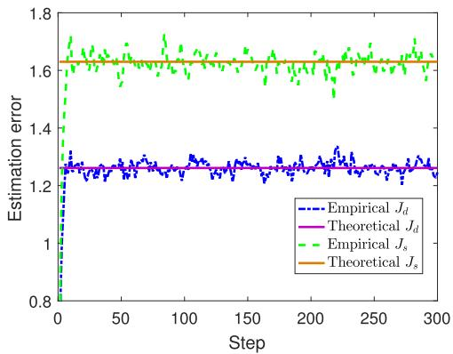
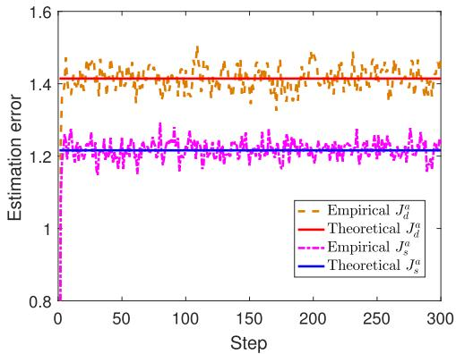

本节需要理解 确定性协议和随机性协议 的基本区别（第 2 课）以及 触发条件反转 和 隐密条件（第 3-4 课）。公式较多，但关键结论的直觉比推导更重要——记住"谁比谁好"以及"反转后谁变差得更厉害"就够了。
1. 正常情况下的性能：确定性更好（Theorem 3）
在 没有攻击 的正常系统中，确定性触发协议和随机性触发协议在相同的平均通信率 $\lambda_d = \lambda_s = \lambda$ 下，性能如何比较？
在相同平均通信率下，确定性协议的期望估计误差协方差 小于或等于 随机性协议：
这个结论的直觉不难理解：
Lemma 3 的直觉
定理 3 的证明依赖于一个关键不等式（Lemma 3）：
其中 $\alpha(x) = \frac{C^\top Q C}{x^2}$（标量系统），或者更一般的 $\alpha(\cdot)$ 是误差协方差增益函数。
直觉：对于任意向量 $x \in \mathbb{R}^n$，总有 $\|x\|_\infty \leq \|x\|_2$。所以：
但是——注意！这里有一个微妙的"反向"：大的范数 → 更容易触发通信 → 误差更小。确定性协议用无穷范数（更"敏感"），所以同样条件下它触发更频繁，误差更小。这就是为什么 $J_d \leq J_s$。

2. 攻击后的性能反转（Theorem 4）
当攻击者 反转了触发条件 并调整参数满足隐密条件（$\lambda_d^a = \lambda_s^a$）后，结论发生了惊人的反转：
在隐密攻击下，确定性协议的期望估计误差协方差 大于 随机性协议：

3. 核心反转因果链拆解（4 步）
为什么确定性协议在攻击下会从"更好"变成"更差"？我们来拆解背后的因果链：
-
① 确定性触发条件可预测
确定性协议 $f_d(e_k, \delta)$ 的触发规则是确定的——给定 $e_k$，触发与否完全确定。攻击者可以精确建模系统的误差分布，从而精准预测哪些时刻会通信、哪些时刻不会。
→ 这使得攻击者可以"定制"反转策略，每个时刻都知道自己反转的是什么
-
② 反转后确定性协议的「全有或全无」特性使误差爆发更剧烈
确定性协议在正常时有一个特性：误差大的一定触发通信，误差小的一定不触发。反转后这个特性变成了：误差大的反而不通信，误差小的反而通信。这意味着：
- 当误差真的很大时（最需要通信的时刻），攻击者让它闭嘴
- 当误差很小时（不需要通信），攻击者却让它传输
结果就是 误差在应该被修正的时候没有被修正，持续累积，直到爆发。
→ "全有或全无"变成"该有的时候没有"
-
③ 随机性协议本身的随机性增加了攻击者的难度
随机性协议 $f_s(e_k, \Pi)$ 的触发是概率性的——给定相同的 $e_k$，有时触发有时不触发。这种内在的随机性意味着：
- 攻击者无法精确预测某一时刻是否触发
- 反转后的行为也没有确定的对应关系
- 一些该通信的时刻（大误差）仍有概率通信（因为反转后概率不为 0）
→ 随机性本身就是一种防御：攻击者无法精准操控
-
④ 结果：确定性在攻击下损失更大
综合上述三点：
- 确定性协议的正常优势（精确触发、节省通信）变成了攻击中的致命弱点
- 随机性协议的正常劣势（不必要的通信）反而变成了攻击中的保护
结论：$J_d^a > J_s^a$，确定性协议在隐密攻击下的性能损失远超随机性协议。
→ 一个引人深思的设计权衡：可预测性 = 脆弱性
4. $\alpha(\delta^a)$ 曲线的直观意义
论文中引入了函数 $\alpha(\delta^a)$ 来量化攻击的影响。理解这个函数是理解 Theorem 3 → Theorem 4 反转的关键：
- $\alpha(\delta^a)$ 的定义
- 给定攻击阈值 $\delta^a$，$\alpha(\delta^a)$ 是误差协方差的"放大因子"——衡量攻击使估计性能恶化的程度。
- $\Theta$ 的交叉点
- 论文定义了一个 $\Theta$ 值，使得当 $\alpha(\delta^a) > \Theta$ 时，不确定性 $\Sigma_k^a$ 的轨迹开始发散（即估计误差协方差不再有界）。
- 几何意义
- 反转条件改变了 Riccati 方程的更新方向。在正常条件下，Riccati 方程收敛到稳定解；在攻击下，同样的方程可能 发散。$\alpha(\delta^a)$ 度量了这个"发散速度"。
📝 练习
📌 练习 1：手算验证反转不等式
题目：假设标量系统 $A = -0.99$，$C = 1$，$Q = 0.25$，$R = 0.16$。给定 $\delta = 1.377$（正常阈值）和 $\delta^a = 0.623$（攻击者通过 Algorithm 1 找到的调整后阈值），计算：
- 正常情况下的 $\alpha(\delta)$ 值
- 攻击后的 $\alpha(\delta^a)$ 值
- 判断 $\Theta$ 的大致范围（提示：$\Theta = \alpha(\delta)$ 时临界发散）
解答：
在标量系统中，$\alpha(\delta) = \frac{C^2 Q}{\delta^2}$（简化形式）：
显然，$\alpha(\delta^a) > \alpha(\delta)$。如果 $\Theta$ 介于 0.1318 和 0.6443 之间，则正常情况稳定（$\alpha(\delta) < \Theta$），攻击下发散（$\alpha(\delta^a) > \Theta$）。
这正是反转的核心！正常时确定性协议有 $\alpha(\delta_d) < \Theta$，攻击后 $\alpha(\delta_d^a) > \Theta$，而不等式反转由 $\alpha$ 函数的单调性和 $\Theta$ 的交叉点决定。
📌 练习 2：用自己的话解释反转
题目：用你自己的话（不超过 200 字）解释为什么确定性协议在隐密攻击下比随机性协议更脆弱。
参考答案（参考框架）：
确定性协议的触发条件是"硬"的（误差超阈值就通信），反转后变成"硬的反面"（误差超阈值反而不通信），全有或全无的特性导致大误差时刻完全没有修正机会。而随机性协议本来就是"软"的（概率触发），反转后大误差时刻仍然有一定概率通信，尽管概率被反转了。这种概率性缓冲使得随机性协议在攻击下的性能损失更小。此外，确定性协议的可预测性让攻击者能精准操控每个时刻的行为，而随机性协议的内在随机性增加了攻击难度。简言之：精确的调度在正常时是优势，在攻击下却是致命的可预测性。